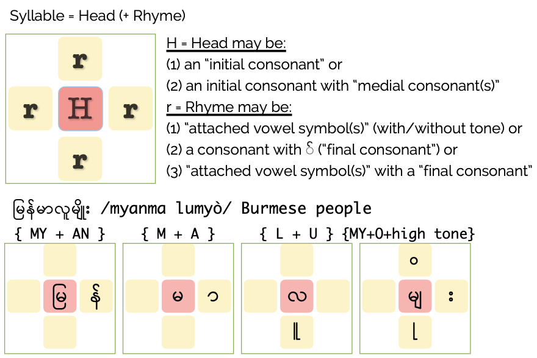

Burmese can look intimidating at first. Once you understand how a Burmese syllable is put together, the scripts, romanization, and tones become much easier to understand.
0 / 10 read
A syllable combines consonants, vowels, medial consonants, final consonants, and tone marks.
Okell's Burmese by Ear (2009, pp. 136–142):

က /ká/ — Head consonant က — to dance
ကာ /ka/ — Head consonant က + rhyme vowel ာ — to cover
ကား /kà/ — Head consonant က + rhyme vowel ာ + tone း — car
You do not need to memorize everything at once. Start with the basic consonants and how they combine with vowels. Find BAMA Basic Scripts Cheatsheet and How to Write Burmese Scripts in Downloads.
Audio by Ko Nay Htet Aung.
Romanization helps you pronounce new vocabulary, but listening to and imitating local pronunciation is more important than memorizing romanized spellings. Unlike Chinese Pinyin, Burmese does not have one officially standardized system of romanization. Here we use the system developed by John Okell.
Aspirated vs. unaspirated: ကျက် /ceq/ vs. ချက် /c’eq/
Breathed vs. non-breathed: မာ /ma/ vs. မှာ /hma/
hm- represents a breathed m. Try saying it with a small amount of air before the m, similar to the sound in “humph.”
Nasal vs. Glottal stop: ကန် /kan/ vs. ကပ် /kaq/
Find BAMA Basic Scripts Cheatsheet with Okell's Romanization in Downloads.
A similar sound with a different tone can have a completely different meaning. When learning new vocabulary, always pay attention to how a local speaker actually pronounces it.
စ /sá/ — to start
စာ /sa/ — text, lesson, writing
စား /sà/ — to eat
တစ်ထောင် /tă-t’aun/ — 1,000
တစ်သောင်း /tă-thaùn/ — 10,000
Burmese has three main tones. In addition, John Okell's system identifies a glottal stop and a weak syllable as important pronunciation features.
အာ့ á — creaky high tone
အာ a — low tone
အား à — plain high tone
အတ် aq — glottal stop
အ ă — weak syllable
Audio by Ko Nay Htet Aung.
Conversation in Burmese often follows object-verb order, and the subject may be left out.
For example:
John Okell describes a typical Burmese sentence as consisting of one or more noun phrases [NP] followed by a verb phrase [VP]. Here, “noun phrase” is used broadly to include adverbs and other elements.
Pay attention to the type of suffix used. A suffix can be attached to a sentence, phrase, verb, noun, or can subordinate one sentence to another.
Okell also notes, words such as ပူတယ် /pu-deh/ and အေးတယ် /è-deh/ are translated into English as adjectives such as “hot” and “cold”, but grammatically they are verbs: “to be hot” and “to be cold”.
Compared with English, Burmese is often described in terms of aspect rather than tense.
Romeo 2008: 1:
“Aspect is the verbal category that most typically describes the ways “... of viewing the internal temporal constituency of a situation” (Comrie 1976: 3).
Aspect differs considerably from tense, “... which relates the time of the situation referred to to some other time, usually to the moment of speaking” (Comrie 1976: 1-2).
In other words, aspect indicates the temporal structure of an event, while tense indicates the temporal location of an event (Bhat 1999:43).”
Romeo 2008: 67-68:
For learners comparing Burmese with English, three important suffixes are useful to recognize:
စားတယ် /sà-deh/ — eat or ate
စားမယ် /sà-meh/ — going to eat
စားပြီးပြီ /sà-pi-bi/ — finished eating
The voicing rule (Okell's term) is blocked when the syllable ends with a glottal stop (-q).
Voicing rule applied
စား တယ် (sa + teh)
တယ် is voiced to
ဒယ်, so it is pronounced
/sa-deh/.
Voicing rule blocked
စပ် တယ် (saq + teh)
Because the preceding syllable ends in a glottal stop,
တယ် is not voiced to
ဒယ်.
We pronounce it /saq-teh/.
| These | k- | c- | t- | s- | p- | th- |
|---|---|---|---|---|---|---|
| And these | k'- | c'- | t'- | s'- | p'- | |
| Voiced to | g- | j- | d- | z- | b- | dh- |
More examples:
When a syllable is weakened (Okell's term), its rhyme is replaced by the vowel -ă.
End with -q:
Combination with a particle:
Unpredictably:
Okell BBE 2009: 146-161:
“A suffix is an element that is attached to the end of a word, like the English -ing in words like learning, thinking, etc. Most of the grammatical information in a Burmese sentence is carried by suffixes. Most suffixes are used with just one part of speech.”
Suffixes can be attached to sentences, phrases, verbs, nouns, and as subordinates one sentence to another.
Changes on suffix change the meaning.
စာအုပ်ပေး။ /sa-ouq pè/ — Give me the book!
စာအုပ်ပေးပါ။ /sa-ouq pè ba/ — Please give me the book.
ကျွန်တော်ကစာအုပ်ပေးတယ်။ /cănaw-gá sa-ouq deh/ — I [as the subject] gave someone the book.
ကျွန်တော်ကိုစာအုပ်ပေးတယ်။ /cănaw-go sa-ouq deh/ — Someone gave me the book.
Find the BAMA Basic Suffixes Cheatsheet in Downloads.
ကော်ဖီ(သုံး)ခွက် /kaw-p'i tòun-gweq/ [coffee + 3 + counter word] Three cups of coffee.
Burmese normally puts the number in brackets in this type of expression.
Okell calls it the Round Number Rule. When a number ends in 0, the order of the number and counter word changes, with 10 as an exception.
1. Round number — number ends in 0, except 10
[N] + (အ)c.w. + # + [V]
ဟော့ဒေါ့အခုနှစ်ဆယ်ပေးပါ။ /háw-dáw ăgu hnăs'eh pè ba/
“Twenty hotdogs, please.”
2. Ten and numbers that do not end in 0
[N] + # + c.w. + [V]
ဟော့ဒေါ့တစ်ခုပေးပါ။ /háw-dáw tăk'u pè ba/ — 1 hotdog, please.
ဟော့ဒေါ့(၅)ခုပေးပါ။ /háw-dáw ngà-gu pè ba/ — 5 hotdogs, please.
ဟော့ဒေါ့ဆယ်ခုပေးပါ။ /háw-dáw s'eh-gu pè ba/ — 10 hotdogs, please.
Notice that 10 is s'eh, not tăs'eh.
Find more examples on
Burmese numerical classifiers
.
Burmese sometimes writes two consonants in a stacked form.
ဒုက္ခ
Written/read as: ဒုက်ခ /douq-k'á/ — trouble, hardship
အင်္ဂလန် /in-gălan/ → အင်ဂလန် — low tone in
အင်္ဂလိပ် /ìn-găleiq/ → အင်းဂလိပ် — high tone in
For more details, see Burmese by Ear, page 141.
For information about typing stacked consonants on a Mac, see Writing Burmese Script on Mac Computers .